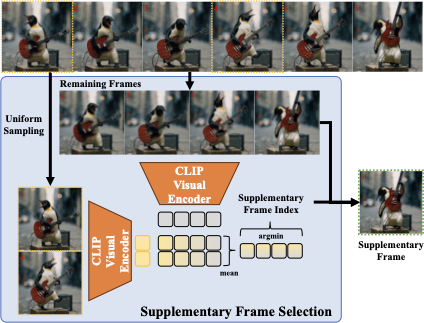
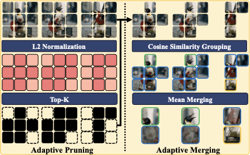

Method

Overview of the D-CoDe framework. Dynamic compression adaptively selects representative frames and aggregates spatial tokens, while question decomposition reformulates the query into sub-questions for more comprehensive video understanding.

Supplementary Frame Selection
Two-stage temporal compression: uniformly sample ⌊α·N⌋ frames, then iteratively select supplementary frames with maximum semantic diversity using CLIP global features.

Spatial Token Pruning & Merging
Prune low-activation tokens by ℓ2 norm, then greedily merge semantically similar tokens (cosine similarity > τ) to reduce spatial redundancy while preserving informative content.